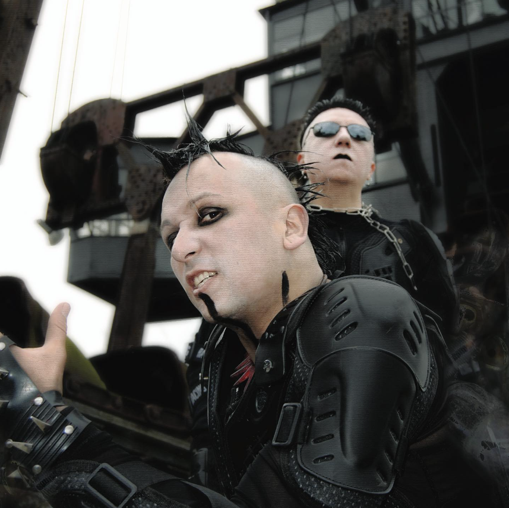
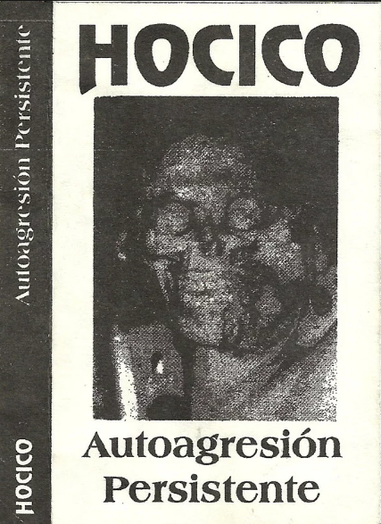

HOCICO : THE MASTERS OF MEXICAN INDUSTRIAL-ELECTRO
23 March 2024

Hocico is a Mexican band classified as Industrial-Electro, Dark Electro, Electro-Metal, Aggrotech, or Electronic Pop-Rock consisting of Erk Aicrag on vocals and Racso Agroyam on programming.
The duo has around twenty albums and EPs to its name, and has performed extensively internationally, including an appearance on The Black Bible compilation.
Hocico has developed a distinctive sound that genre specialists consider to be one of the benchmarks of the Aggrotech style.
Delving into the darkest depths of Industrial-Electro music, Hocico stands as a titan in the Mexican and international musical landscape. Formed in Mexico City in the late 1990s,
this iconic duo embodies a unique fusion of sonic brutality and emotional expression.
Their music is a symphony of merciless beats, haunting synthesizers and abrasive vocals. Albums such as “Sangre Hirviente” and “Tierra Electrica” testify to their ability
to create dystopian soundscapes that transport listeners into a parallel world of darkness and mystery.
As teenagers, the two cousins, Erik Garcia (Erk Aicrag) and Oscar Mayorga (Racso Agroyam), were influenced by Skinny Puppy and bands on the Wax Trax label. In 1989,
they embarked on a project they called Niñera Degenerada.
the project was unfortunately abandoned in 1992. That same year, they embarked on a new concept. Hocico de Perro (“dog nose” in Spanish) was born (the name was later shortened to Hocico).
Following a few small concerts, the band, still relatively unknown, nevertheless began to rise, playing gig after gig, gaining notoriety and reputation within the small circle of underground music.
In 1994, a guitarist made his appearance, but due to a musical incompatibility with Hocico’s style, he left the group after just one month.
The release of the demo cassette “Autoagresion Persistente” (1994) marked the beginning of the band’s ascent. The musical foundations were laid, revealing music that was heavy, deeply dark,
melodic and electronic, accompanied by vocals that were already following in the footsteps of Industrial-Electro greats such as Wumpscut and Suicide Commando.

Finally, in 1997, Hocico reached its peak with the release of the album “Odio Bajo El Alma”, distributed by the Mexican label Opción Sónica and in Europe by Out of Line. The album met with remarkable success, hailed by specialist critics as a major breakthrough in the Mexican electronic music scene, thanks to its original composition and innovative character.